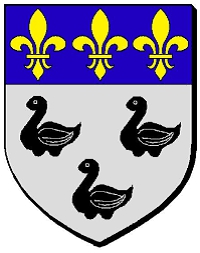

Count Pepin de Vermandois
* 876 Vermandois, France
† 922 Senlis, Picardie, Frankrike
Greve av Senlis
Blev högst 46 år
* 876 Vermandois, France
† 922 Senlis, Picardie, Frankrike
Greve av Senlis
Blev högst 46 år
Count Pepin III de Vermandois
* omkring 846 Vermandois, Normandie, Frankrike
† omkring 893 Senlis, Picardie, Frankrike
Greve av Vermandois & Senlis & Valois
Blev ca 47 år
* omkring 846 Vermandois, Normandie, Frankrike
† omkring 893 Senlis, Picardie, Frankrike
Greve av Vermandois & Senlis & Valois
Blev ca 47 år
49224469252 Count Pepin II de Vermandois
* omkring 817
† omkring 850
Greve av Vermandois
Blev ca 33 år
* omkring 817
† omkring 850
Greve av Vermandois
Blev ca 33 år

98448938504 King Bernard of Italy
* 797 Vermandois, France
† 818 Aachen, Cologne, Tyskland
Kung av Italien & Lombardiet
Blev högst 21 år
* 797 Vermandois, France
† 818 Aachen, Cologne, Tyskland
Kung av Italien & Lombardiet
Blev högst 21 år

98448938505 Queen Cunegonde de Laon
* 797 Aisne, Picardie, France
† 835 Milano, Lombardiet, Italien
Drottning av Italien & Lombardiet
Blev högst 38 år
* 797 Aisne, Picardie, France
† 835 Milano, Lombardiet, Italien
Drottning av Italien & Lombardiet
Blev högst 38 år